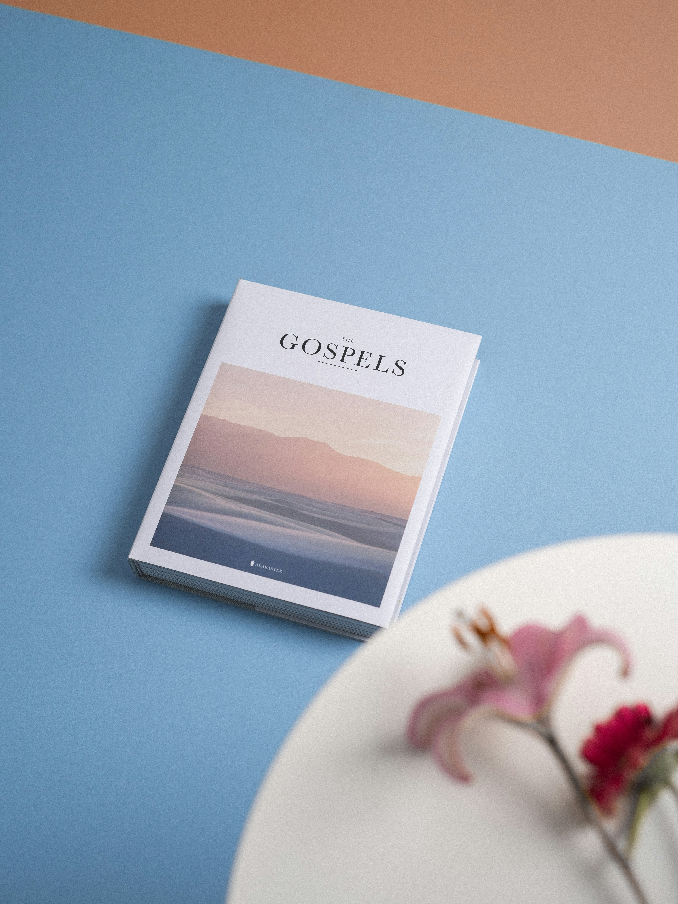

The Everlasting Gospel
GOSPEL REDEFINED
The gospel of Jesus is a tool to restore man back into the intention of God for Man.
Divisions of the Gospel
The gospel of Jesus is divided into three parts e.g THE GOSPEL OF CHRIST,THE GOSPEL OF THE FATHER AND THE GOSPEL OF GOD.
THE GOPEL OF CHRIST
The essence of the gospel of Christ is to shift man's attention from the carnal things of this world to begin to pant for what matters which is a life in God.
THE GOSPEL OF THE FATHER
The essence of the gospel of the father is to open man up to the life that God appreciates and give himself to, so that man likewise gives himself to it.
THE GOSPEL OF GOD
The essence of the gospel of GOD to open you up to a life in God that God does not get weary of which is also called (ETERNAL LIFE).
 Learn more about the gospel here..| Name | Age | Country |
| John | 25 | USA |
| Emily | 28 | Canada |
| Michael | 32 | Australia |
| Sophia | 21 | UK |